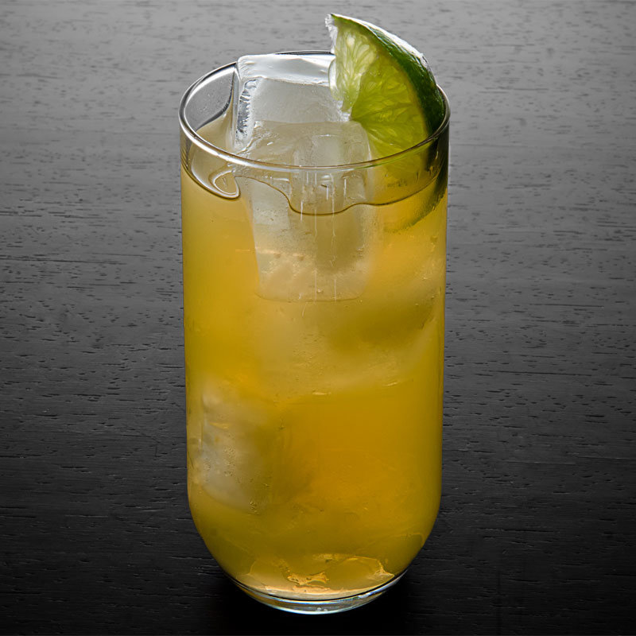

Irish Buck

Zutaten
1 1/2 oz Irish whiskey
1/4 oz fresh lime juice
2 oz ginger ale
Garnish: lime wheel
Zubereitung
Add the whiskey and lime juice to a Collins glass filled with ice.
Top with the ginger ale and garnish with a lime wheel.